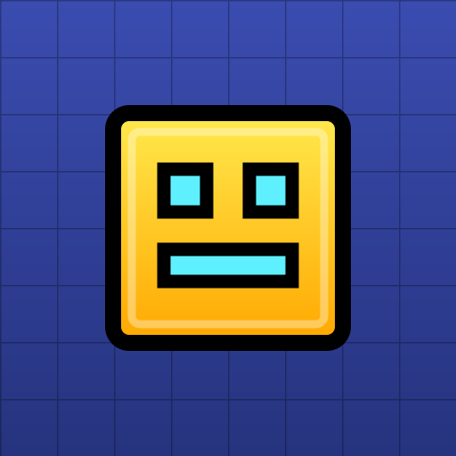
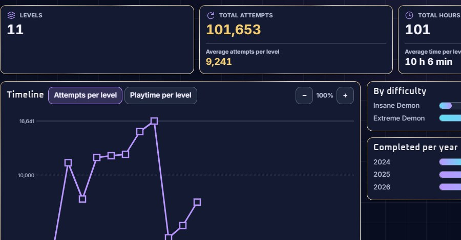
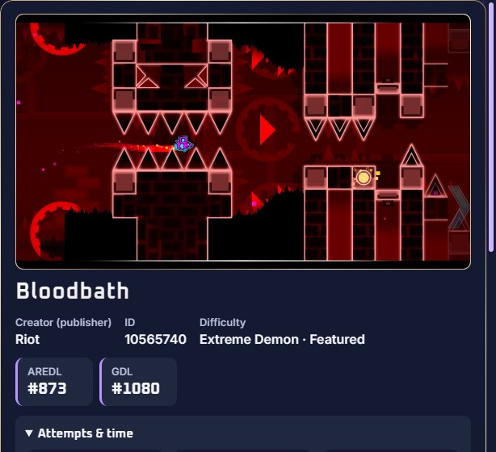

Personal Progress ListTrack and rank your Geometry Dash clears
Your completed levels in your own order, with attempts, play time, deaths and stats.
- Classic & Platformer lists
- Wishlists
- Statistics & timeline
- Level details
wal-014.github.io/Personal-Progress-List

